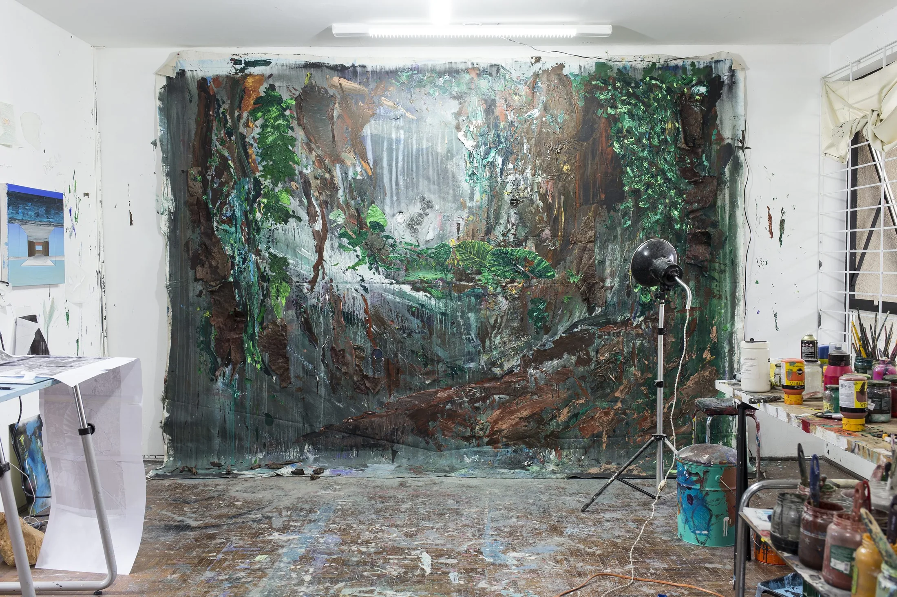

With more than 19 years of practice in the visual arts, Willian Santos explores ecosystems, matter, and the processes of transformation that shape life, with water as a recurring field of inquiry. Working across painting, encaustic, object, and installation, he investigates the relationships between matter, perception, and environment.
His practice engages images, forms, and references that, amid the saturation of contemporary visual culture, seem to have been forgotten, bringing them back into contact with their sensory potential. The visible and what remains at the margins of perception coexist in his work, where the image unfolds as an experience beyond representation.
Process is central to his practice. Layers, residues, accidents, superimpositions, and erasures form a dynamic in which matter actively participates in the formation of the image. His practice evokes a material alchemy shaped by the interplay of intention, chance, and unpredictability.
My work emerges from the everyday relations that unfold beyond the studio. It is within this field of lived experience that the process begins: a space where artwork and existence intersect, where part of the work’s essence takes shape, and to which it later returns.
My research is driven by a curiosity to interpret life and by the alchemy inherent in the making of painting. I am interested in a world revealed through the interplay of two complementary paths: the path of the eye and the path of the heart.
— Willian Santos
Matter remains in circulation.
Over the years, I began collecting dried paint, studio residues, and fragments from earlier works, recognizing in these materials a potential for transformation as compelling as that of newly produced matter.
This practice resonates with the natural ecosystems that inform my research. Nothing in life exists entirely in isolation or reaches a definitive end; matter circulates, decomposes, reorganizes, and re-emerges in new configurations. I bring this logic into painting by approaching the studio as a living system, where materials remain in continuous transformation.
The ecological dimension of the work emerges from this shift in perspective. Rather than representing environmental concerns, I seek to incorporate them into the artistic process itself, valuing transformation, the persistence of matter, and the reduction of waste. Fragments returning to the paintings carry traces of earlier works, allowing each painting to become part of a larger material cycle in which nothing is fully concluded, but continues to change and acquire new forms.
Born in Curitiba in 1985, Santos lives and works in Florianópolis, Brazil.
He holds a Bachelor’s degree in Visual Arts from Universidade Tuiuti do Paraná, completed in 2009, and has been working in the visual arts for more than 19 years.
With more than 19 years of artistic practice, he has presented his work in public and private institutions.